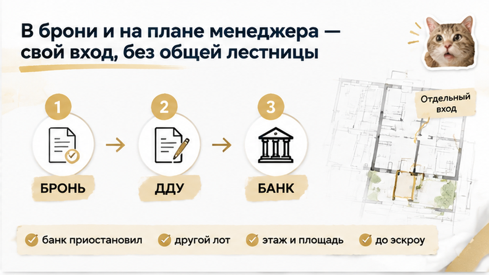
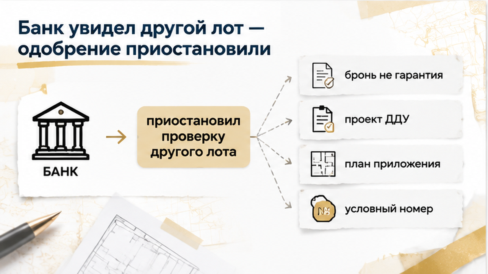
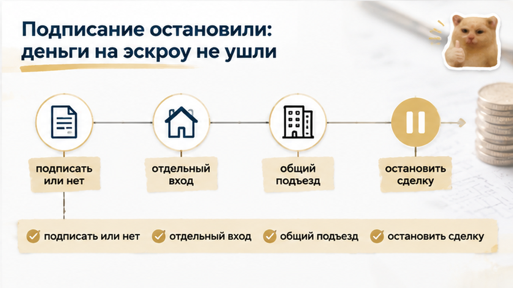

За 2 дня до подписания ДДУ семья с двумя детьми узнала: выбранный в Тюмени «таунхаус» в договоре оказался квартирой в блоке — и остановила сделку до эскроу. В брони, переписке с менеджером и на плане были отдельный вход и отсутствие общей лестницы, а в проекте ДДУ появились другой этаж, другая площадь, другой условный номер и общий подъезд. Банк не подтвердил комплект документов под фактический объект и приостановил проверку. В офисе семье предложили сначала подписать договор и перевести деньги на эскроу, а исправления внести потом, но родители не подписали договор.
Семья искала не обычную квартиру в многоэтажке. Для родителей были важны две вещи: собственный вход с улицы и отсутствие общей лестницы с соседями. В доме должны были жить двое детей, поэтому они спрашивали менеджера не только о цене и площади, но и о том, как устроен вход в помещение.
В переписке объект называли таунхаусом. Менеджер говорил об отдельном входе и присылал план, на котором нужная секция выглядела самостоятельной частью малоэтажного проекта. Для семьи всё складывалось в простую картину: подошли к своему блоку, открыли дверь и попали внутрь, не проходя через общий подъезд.
Но рекламное слово и юридическое описание — не одно и то же: отдельный вход не меняет вид объекта в ДДУ. Семья попросила документы и сравнила лот с тем, за который собиралась платить ипотекой.

Сначала всё выглядело последовательно. В брони стояло обозначение таунхауса, в переписке сохранились формулировки «отдельный вход» и «без общей лестницы», а менеджер прислал PDF с планом. На нём семья увидела нужный вариант в малоэтажной части проекта.
Для покупателя бронь и план легко становятся подтверждением того, что стороны говорят об одном и том же лоте. Но проверять нужно не только название. Важны этаж, площадь, условный номер, расположение входа и принадлежность к конкретному корпусу. Если эти признаки не совпадают, объяснение нужно получить до подписания, а не после.
Именно поэтому родители попросили проект ДДУ и приложение к нему. Там обнаружилась не одна случайная неточность, а разница между объектом, который обсуждали при выборе, и объектом, который застройщик собирался оформить юридически.
Такая ситуация бывает не только с названием «таунхаус». В одном документе объект могут описать как квартиру, а в другом обнаружится другой тип помещения: в ДДУ указали квартиру, а в выписке оказались апартаменты. Поэтому обещание имеет вес только тогда, когда оно закреплено в договоре или его приложениях.
До получения проекта ДДУ семья ещё могла принять расхождение за техническую ошибку, которую менеджер быстро исправит. Но документ показывал сразу несколько отличий. Родителям нужно было понять, какой именно лот готовы провести по сделке застройщик и банк.
За два дня до подписания ДДУ и открытия эскроу семья получила проект договора с приложением. До этого в брони, переписке с менеджером и на плане объект выглядел как таунхаус: отдельный вход, никакой общей лестницы, малоэтажный формат. Именно такой вариант родители и выбирали для себя и двоих детей.
В проекте ДДУ картина изменилась. Там значилась квартира — жилое помещение в многоквартирном доме или блоке. В приложении к договору появились общий подъезд, другой этаж, иная площадь и другой условный номер.
Это уже не случайная описка в названии. Не совпадал сам объект, который семья видела на плане и обсуждала с менеджером, с тем, что предлагали оформить договором.
Родители сопоставили проект ДДУ с бронью, PDF-планом и перепиской: этаж, площадь, условный номер и подъезд не складывались в один лот.
Такие расхождения могут появляться и в других документах. В одном месте покупателю обещают один тип объекта, а в ДДУ указывают другой; в проектной декларации обнаруживается важная деталь о корпусе или земле, о которой менеджер не говорил. Поэтому название в презентации нельзя ставить выше договора и его приложений. Как минимум их нужно читать вместе с планом и обозначениями конкретного объекта.

Проект ДДУ отправили в банк. Там увидели, что комплект документов не подтверждает тот объект, под который семья рассчитывала ипотеку: в договоре были другие характеристики помещения, чем в брони и материалах менеджера.
Банк не обязан автоматически отказывать в такой сделке. Но он может приостановить проверку и попросить актуализированный комплект. Для кредитной организации это был уже не просто «тот же таунхаус с новым описанием»: изменились тип помещения, этаж, площадь, условный номер и схема доступа.
Одобрение ипотеки на новостройку не означает, что можно подписывать любой договор с тем же застройщиком. Банк проверяет конкретный объект и документы именно по нему. Если параметры не совпадают, сначала нужно подтвердить, что покупатель, застройщик и банк говорят об одном лоте.
В офисе семье могли предложить подписать ДДУ, открыть эскроу, а исправления внести позже. На словах это выглядело как небольшая техническая правка. Но после подписи покупатель уже разбирается не с обещанием менеджера, а с текстом договора и условиями его изменения.
Родители отказались подписывать документы до устранения расхождений. Деньги на эскроу не переводили. Пока ДДУ не подписан, остаётся возможность остановить оформление и потребовать объяснить, какой именно объект предлагают купить. Что будет с бронью, зависит от её текста и условий возврата, поэтому заранее объявлять удержание законным или незаконным нельзя.
Именно здесь выяснилось, что бронь не гарантирует: в ДДУ автоматически попадёт тот формат, который показывали при выборе. Она фиксирует только те договорённости, которые в ней записаны. Для окончательной проверки нужны проект ДДУ, приложение с планом и сведения по конкретному корпусу в проектной декларации. Бронь и проектная декларация могут показывать разные важные детали — безопаснее увидеть это до открытия эскроу, а не после подписания.
До подписи ДДУ можно спокойно сопоставить бронь, план и проект договора. Напишите в Telegram или MAX — начнём с трёх документов, а не с обещания «подпишите, потом поправим».

Родители не подписали ДДУ и не открыли эскроу, пока застройщик не прислал согласованный проект на тот лот, который семья выбирала по плану и переписке.
Но одно было очевидно: слово «таунхаус» в рекламе и переписке не заменяет описание объекта в договоре. Квартира с отдельным входом действительно может находиться в малоэтажном многоквартирном доме. Поэтому решающим становится не название, а совпадение конкретных документов.
Если в брони указан таунхаус, а в ДДУ — квартира в блоке, подписали бы ради более низкой цены или разорвали бронь?
Перед сделкой нужно сравнить не одну страницу договора и не красивый план из презентации. У покупателя должны совпасть три слоя: то, что ему забронировали, то, что застройщик включил в проект ДДУ, и то, как этот корпус и лот описаны в проектной декларации.
Сначала проверьте бронь и переписку с менеджером. Сохраните сообщения и файлы, где указаны отдельный вход, отсутствие общей лестницы, площадь, секция или номер блока. Если важное обещание осталось только в телефонном разговоре, потом будет сложнее подтвердить, о чём именно шла речь.
Затем сравните приложение к ДДУ с PDF из брони: совпадает ли юридический тип жилья, метраж, идентификатор лота, корпус и схема прохода к двери с тем, что вам показывали на встрече.
Третий источник — проектная декларация на наш.дом.рф по нужному корпусу. В ней можно проверить, как застройщик официально описывает дом, количество помещений, корпус и выбранный лот. Если в рекламе звучит «таунхаус», а в ДДУ и декларации указана квартира в многоквартирном доме, это ещё не готовый вывод о мошенничестве или недействительности договора. Но это серьёзная причина остановиться и попросить письменное объяснение до подписи.
Имеет смысл сравнить бронь с проектной декларацией: обещание собственности на землю может не совпасть с данными по проекту. То же относится к отделке и комплектации: если обещали чистовую, а в ДДУ это не закрепили, на приёмке легко получить спор о словах — как в истории с голыми стенами вместо заявленной отделки.
Если документы не сходятся, не нужно сразу отказываться от покупки. Сначала запросите исправленный проект ДДУ или другой лот, передайте согласованный комплект в банк и только потом возвращайтесь к вопросу об эскроу. Пауза до подписания здесь не мешает сделке — она помогает понять, за какой именно объект вы собираетесь платить.
Итог для семьи был простым: они сохранили право требовать тот лот, который согласовывали письменно, и не перевели деньги, пока банк не увидел один и тот же объект в брони, проекте ДДУ и декларации. Такой шаг не отменяет покупку новостройки — он отсекает подпись «чужого» договора.
Если в брони указан таунхаус, а в ДДУ — квартира в блоке, вы бы подписали ради цены или разорвали бронь? Напишите в комментариях.
Материал не заменяет индивидуальную юридическую консультацию.